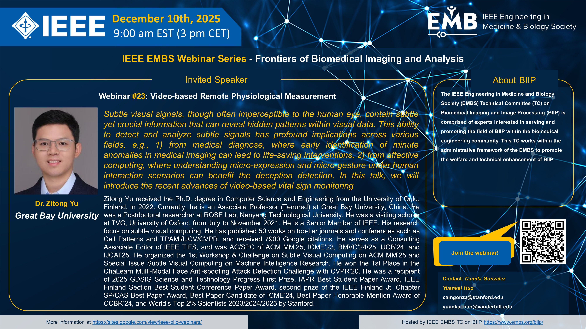

We are delighted to invite you to the upcoming session of the IEEE EMBS Webinar Series on Frontiers of Biomedical Imaging and Analysis. We will be hosting Dr. Zitong Yu (Great Bay University), who will present on the topic: "Video-based Remote Physiological Measurement".
About the Speaker: Dr. Yu has a solid research background in computer vision, with prior experience at the University of Oulu, NTU, and Oxford. He serves as a Consulting Associate Editor for IEEE TIFS and has been listed in Stanford's World's Top 2% Scientists for three consecutive years.
In this talk, he will discuss the latest advances in subtle visual computing and non-contact vital sign monitoring—a crucial technology for future healthcare and affective computing.

Join us live
- Date: December 10, 2025 (Wednesday)
- Time: 9:00 AM EST (New York) | 3:00 PM CET (Paris) | 10:00 PM CST (Beijing)
- Register: Zoom Registration